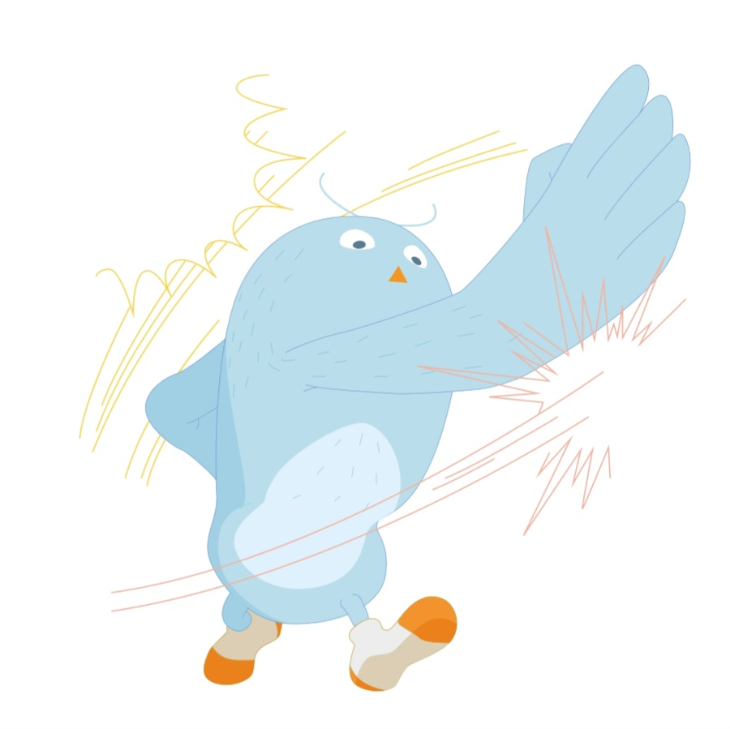

HAPPY BUDDY DAY !
00
:
00
pm
여행 성향 테스트 결과
완벽을 좇는 도전가
계획적인 순간 감상자

당신은 여행을 철저하게 계획하되, 그 과정에서 각 순간을 놓치지 않고 즐기려는 여행자입니다. 철저한 계획을 세우지만, 그 계획 안에서 여유를 찾고, 즉흥적인 순간도 즐기는 스타일이에요. 외부 활동을 선호하며, 액티비티에 집중하면서도 그 순간을 기억하고 사진으로 남기기보다는 마음에 담아두려 합니다. 모든 여행지에서 계획을 철저히 따르면서도, 그 속에서 개인적인 경험을 찾는 데 중점을 둡니다.
Tips
계획 안에서 여유를 느낄 수 있는 시간을 마련해 보세요.
여행 중 감각적으로 순간을 즐길 기회를 놓치지 마세요.
Best Spots
프랑스 파리: 유명 관광지와 예술적 분위기를 동시에 즐길 수 있어요
영국 런던: 왕궁, 박물관, 그리고 차분한 공원에서 순간을 즐길 수 있습니다.
이탈리아 베네치아: 고풍스러운 거리에서 계획을 따르되 여유를 갖고 탐방하기 좋아요.